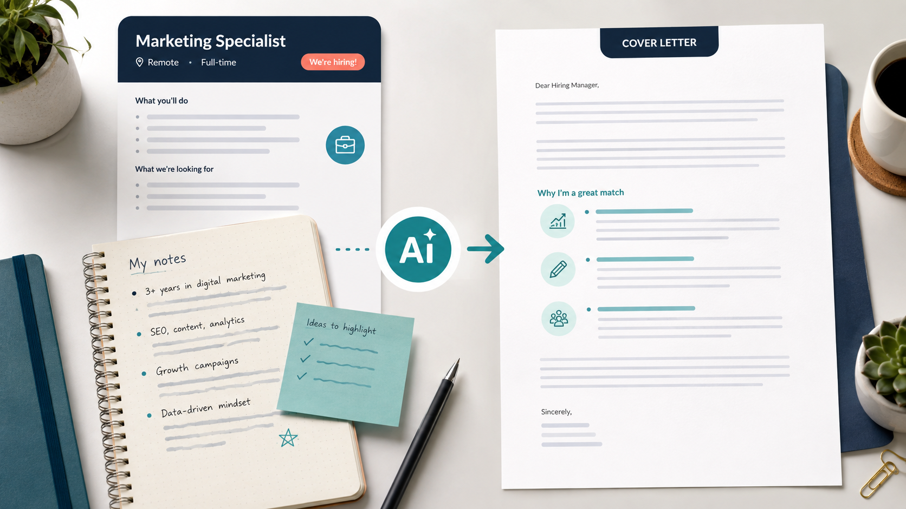

Промтзилла
Сопроводительное письмо должно объяснять, почему ты подходишь именно этой вакансии, а не повторять резюме другими словами.

Пошаговая инструкция
- 1Вставь описание вакансии и своё резюме.
- 2Укажи тон: спокойный, уверенный, без канцелярита.
- 3Попроси связать требования вакансии с твоим опытом.
- 4Сделай письмо коротким: 3-5 абзацев.
- 5Проверь, что письмо звучит как ты, а не как шаблон.
Какой результат просить
Хорошее письмо коротко показывает мотивацию, совпадение опыта и конкретную пользу для работодателя. Для такой задачи можно открыть Study24 AI, дать вводные и попросить несколько вариантов под разные цели.
Промт
RU
Напиши сопроводительное письмо под вакансию. Вакансия: [вставь вакансию] Мой опыт: [вставь резюме или ключевые факты] Требования: — 3-5 коротких абзацев; — живой уверенный тон без штампов; — объяснить, почему мне интересна эта роль; — связать мой опыт с требованиями вакансии; — показать, какую пользу я могу принести; — не повторять резюме полностью. Не выдумывай факты. Если данных мало, предложи 3 вопроса, которые помогут улучшить письмо.
EN
Write a cover letter for this job. Job posting: [paste job posting] My experience: [paste resume or key facts] Requirements: — 3-5 short paragraphs; — natural confident tone without clichés; — explain why I am interested in this role; — connect my experience to the job requirements; — show what value I can bring; — do not repeat the whole resume. Do not invent facts. If information is missing, suggest 3 questions that would improve the letter.
Важно
Перед отправкой убери фразы, которые не похожи на твою речь. Письмо должно звучать лично.
Теги